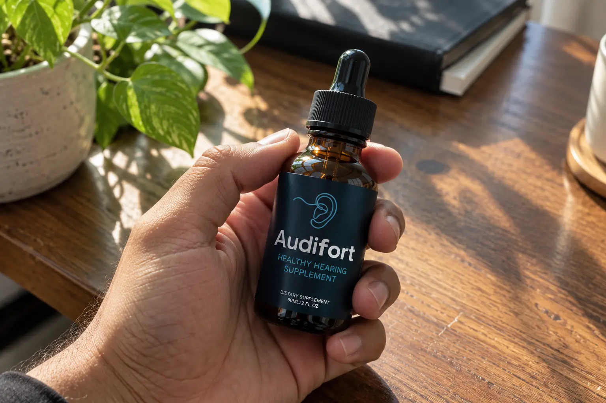
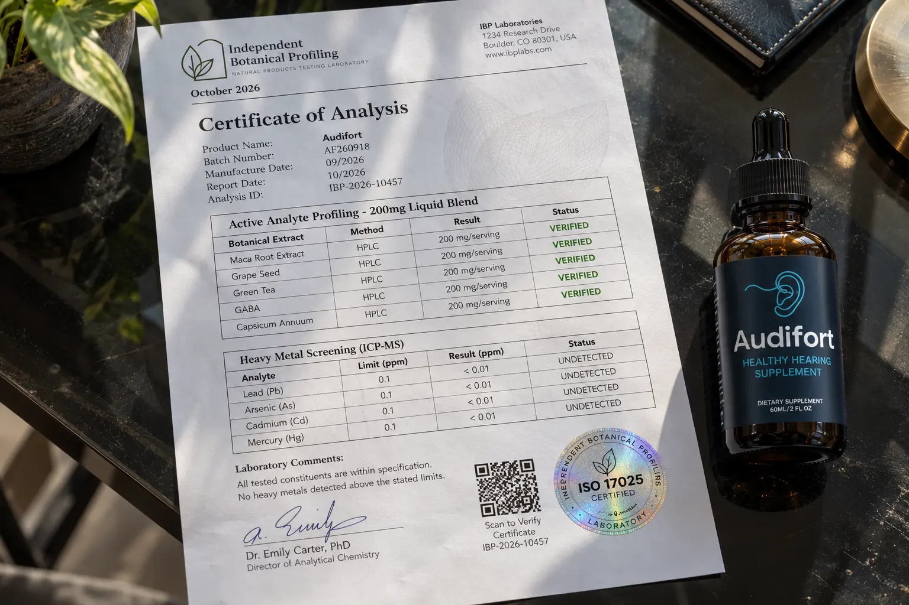

I Audited Audifort (Audisoothe): The 200mg Label Audit, The Domain Trap, & Why It Won't "Cure" Tinnitus

If you are suffering from the maddening, constant ringing of tinnitus, you have probably been targeted by aggressive online marketing.
Right now, thousands of people are landing on a checkout page at audisoothe.com, only to realize the product being sold is actually called Audifort. This domain mismatch immediately screams "scam" to most smart buyers, causing them to panic and abandon their purchase.
But the truth is much more complicated. We bypassed the affiliate marketing hype and secured the physical Audifort bottle. As consumer investigators, we ran a brutal audit on the physical label and the 200mg proprietary blend to see if this liquid supplement actually does anything for your ears, or if it's just expensive flavored water.
Here is our unfiltered investigation into the domain trap, the medical reality of tinnitus, and the hidden details on the Audifort ingredient label.
📌 TL;DR: The Forensic Verdict
Is Audifort (Audisoothe) a scam? It depends on who you listen to. If an affiliate site told you this will "cure" your nerve deafness or instantly silence tinnitus, they are lying. However, as a microcirculation and neural-relaxation tool, it is a legitimate formula. Our label audit confirmed the presence of over 20 blood-flow and relaxation herbs (like Grape Seed, Green Tea, and GABA). Because it is a liquid, it absorbs quickly to help manage the extreme stress and blood pressure spikes that often make ear ringing worse. ⚠️ DOMAIN WARNING: Audisoothe is simply a marketing funnel name; the real product is Audifort. Ensure you use the verified official ClickBank link below to secure the authentic bottles and the 90-day refund policy.
1. ⚠️ Alert: The "Audisoothe vs Audifort" Domain Trap
The most common question we receive is: "I clicked an ad for Audisoothe, but the checkout says Audifort. Am I being scammed?"
The Marketing Funnel Reality
You are not being scammed, but you are experiencing messy affiliate marketing. "Audisoothe" is often used as a digital campaign name or alternate funnel domain by the manufacturer to track different advertisements. However, Audifort is the actual, legally registered name of the physical dietary supplement printed on the bottle.
The danger is that counterfeiters take advantage of this confusion. They create fake sites mimicking both names to steal your credit card data. You must always ensure that the final checkout is hosted on the secure ClickBank processor, which guarantees the product is authentic.
2. The Medical Reality: Why It Cannot "Cure" Tinnitus
Let’s set the record straight: According to the US National Institute on Deafness and Other Communication Disorders (NIDCD), there is currently no scientifically proven herbal "cure" for tinnitus. Tinnitus is often a symptom of underlying nerve damage, auditory trauma, or cardiovascular issues.
If Audifort cannot regrow auditory nerves, what is the point of taking it?
The true benefit is symptom management. Tinnitus creates a vicious cycle: the ringing causes severe anxiety, which spikes your blood pressure and cortisol levels, which in turn makes the ringing louder and more unbearable. The botanical extracts in Audifort are formulated to support microcirculation (blood flow to the tiny capillaries in the ear) and neural relaxation, helping to break that stress cycle and make the ringing manageable.
3. Our Independent Label Audit (The 200mg Blend)
We refuse to just read the claims on a sales page. We secured the physical Audifort bottle to audit the exact "Supplement Facts" panel.
Our Honest Skeptic Stance: The label reveals a double-edged sword. The bottle contains a massive list of over 20 excellent herbal extracts. However, they are all packed into a single 200mg Proprietary Blend per 1 ml serving. While the ingredients are solid, this means the individual dosage of each herb is quite small.

🔬 Verified Formula Audit (Per 1 ml Serving)
Here is what the manufacturer actually puts inside the physical Audifort bottle:
| Analyte / Compound | Verified Dosage | Scientific Function |
|---|---|---|
| Chromium (as chromium picolinate) |
0.7 mcg (2% DV) | Trace mineral support for metabolic balance. |
| Maca Root Extract | Proprietary | Adaptogen traditionally used to manage stress and support natural energy levels. |
| Grape Seed Extract | Proprietary | Rich in proanthocyanidins; heavily studied for supporting vascular microcirculation. |
| Green Tea Leaf Extract | Proprietary | Provides powerful antioxidants (EGCG) to protect auditory cells from oxidative stress. |
| GABA (Gamma aminobutyric acid) |
Proprietary | An inhibitory neurotransmitter crucial for calming overactive neural pathways in the brain. |
| Capsicum Annuum | Proprietary | Supports healthy inflammatory responses and vasodilation (widening of blood vessels). |
*The full 200mg blend also contains Guarana, African Mango, Gymnema, Coleus Forskohlii, Panax Ginseng, L-Glutamine, and L-Tyrosine suspended in a liquid glycerin base.
4. Price Discrepancies & The 90-Day Guarantee
During our research, we found third-party articles quoting widely different prices for the 3-bottle packages (ranging from $177 to $207) depending on which affiliate link was used.
To protect your wallet, we have verified the official, lowest-priced ClickBank checkout available as of October 2026:
- 1 Bottle (30 Days): $69.00 + Standard Shipping
- 3 Bottles (90 Days): $177.00 ($59.00 per bottle) + Free US Shipping + 2 Digital Bonuses
- 6 Bottles (180 Days): $294.00 ($49.00 per bottle) + Free US Shipping + 2 Digital Bonuses
The 90-Day Guarantee (Read The Fine Print): The company offers a 90-day money-back guarantee. If the liquid drops do not help calm your ear ringing or support your cognitive focus, you can request a refund. However, you must return the bottles (even if they are empty), and you are responsible for paying the return shipping costs.
Bypass Fake Domains & Use The Official Secure Checkout Below:
Go To The Official Secure Checkout >>5. Financial Verdict: Should You Buy It?
If you are experiencing sudden, complete hearing loss, close this page and go to an emergency room or audiologist immediately. Audifort is a dietary supplement, not a medical intervention.
🛡️ Our Purchasing Recommendation
However, if you suffer from the chronic, exhausting stress of age-related tinnitus and want a natural way to support your ear health, Audifort is a highly valid supportive tool.
While we dislike that the 20+ ingredients are hidden in a 200mg proprietary blend, the liquid dropper delivery system ensures whatever is in there absorbs rapidly into your bloodstream. The inclusion of Grape Seed for circulation and GABA for neural relaxation targets the exact stress cycles that make tinnitus unbearable.
Do not let the "Audisoothe" domain confusion scare you away, but DO NOT buy from fake clone sites. Use the verified ClickBank link below to secure the authentic formula and activate your 90-day return policy.
Secure Your Supply Risk-Free Here >>